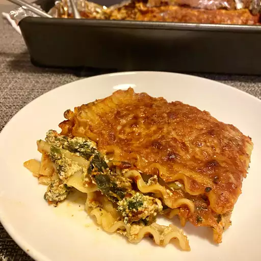

Lasagna

Description
Delicious vegetarian spinach lasagna for family gatherings!
Crispy! Easy!, and it is cheesy!!
Ingredients
- Cooking spray
- 9 lasagna noodles
- 1 bunch fresh spinach
- 1 (8 ounce) container ricotta cheese
- 1/2 cup shredded mozzarella cheese
- 1 egg, lightly beaten
- 1 pinch of ground nutmeg
- 1 pinch of dried basil
- salt and ground black pepper to taste
- 1 cup pasta sauce
- 1/2 cup shredded mozzarella cheese
- 1/4 cup grated parmesan cheese
Steps
- Preheat the oven to 200°C. Spray a 1 1/2-quart
casserole dish with cooking spray
- Bring a large por of lightly salted water to boil. Cook lasagna in the boiling
water, stirring occasionally, until cooked through but firm to the bite, about 8 minutes.
Drain
- Place a steamer insert into a saucepan and fill with water to just below the bottom of the steamer.
Bring the water to boil. Add the spinach, cover, and steam until tender, 2 to 6 minutes.
Drain spinach.
- Mix spinach, ricotta cheese, 1/2 cup mozzarella cheese, egg, nutmeg, basil, salt,
black pepper in a bowl until thoroughly combined.